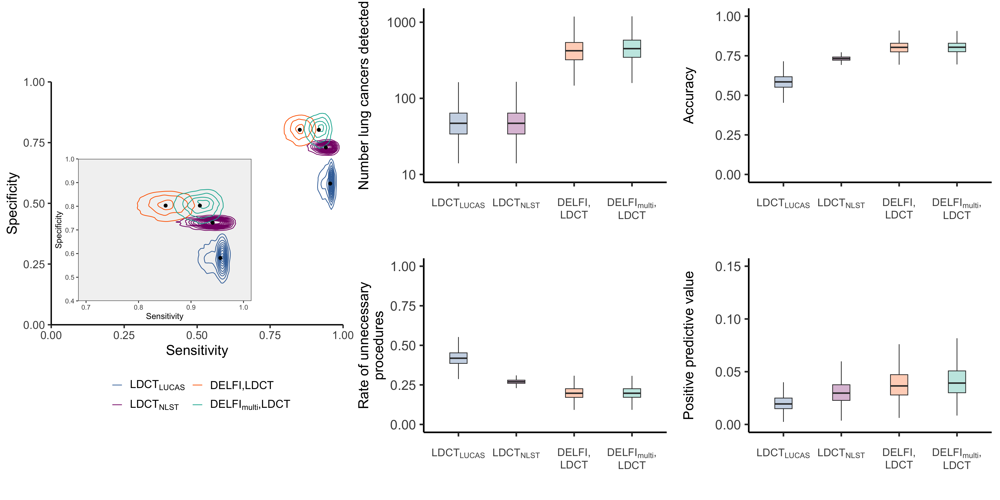

Prior predictive distributions of DELFI and LDCT in screening
01 March, 2024
Last updated: 2024-03-01
Checks: 6 1
Knit directory: reproduce_lucas_wflow/
This reproducible R Markdown analysis was created with workflowr (version 1.7.1). The Checks tab describes the reproducibility checks that were applied when the results were created. The Past versions tab lists the development history.
Great! Since the R Markdown file has been committed to the Git repository, you know the exact version of the code that produced these results.
The global environment had objects present when the code in the R
Markdown file was run. These objects can affect the analysis in your R
Markdown file in unknown ways. For reproduciblity it’s best to always
run the code in an empty environment. Use wflow_publish or
wflow_build to ensure that the code is always run in an
empty environment.
The following objects were defined in the global environment when these results were created:
| Name | Class | Size |
|---|---|---|
| rv | list | 2.9 Kb |
The command set.seed(20210819) was run prior to running
the code in the R Markdown file. Setting a seed ensures that any results
that rely on randomness, e.g. subsampling or permutations, are
reproducible.
Great job! Recording the operating system, R version, and package versions is critical for reproducibility.
Nice! There were no cached chunks for this analysis, so you can be confident that you successfully produced the results during this run.
Great job! Using relative paths to the files within your workflowr project makes it easier to run your code on other machines.
Great! You are using Git for version control. Tracking code development and connecting the code version to the results is critical for reproducibility.
The results in this page were generated with repository version d71c8ac. See the Past versions tab to see a history of the changes made to the R Markdown and HTML files.
Note that you need to be careful to ensure that all relevant files for
the analysis have been committed to Git prior to generating the results
(you can use wflow_publish or
wflow_git_commit). workflowr only checks the R Markdown
file, but you know if there are other scripts or data files that it
depends on. Below is the status of the Git repository when the results
were generated:
Ignored files:
Ignored: .Rhistory
Untracked files:
Untracked: CITATION
Untracked: temp.rds
Unstaged changes:
Modified: .Rprofile
Modified: README.Rmd
Modified: code/model_code/predict-lucas_c1.r
Modified: code/models_c1/model_full_lasso2.rds
Modified: code/models_c1/model_seq_glm.rds
Modified: data/delfi_sensitivities.csv
Note that any generated files, e.g. HTML, png, CSS, etc., are not included in this status report because it is ok for generated content to have uncommitted changes.
These are the previous versions of the repository in which changes were
made to the R Markdown (analysis/fig6cdefg.Rmd) and HTML
(docs/fig6cdefg.html) files. If you’ve configured a remote
Git repository (see ?wflow_git_remote), click on the
hyperlinks in the table below to view the files as they were in that
past version.
| File | Version | Author | Date | Message |
|---|---|---|---|---|
| Rmd | d71c8ac | rscharpf | 2024-03-01 | wflow_publish("analysis/*.Rmd") |
| Rmd | afb2c3a | shay-279 | 2021-08-19 | Mathios et. al. |
| html | afb2c3a | shay-279 | 2021-08-19 | Mathios et. al. |
library(jcolors)
library(ggplot2)
library(magrittr)
library(tidyverse)
library(fs)
library(grid)
library(mvtnorm)
library(readxl)
library(kableExtra)
library(scales)
library(here)
here("code", "plot-roc.R") %>%
source()Modeling DELFI and LDCT screening
Performance of LDCT
perftheme1 <- theme(panel.grid=element_blank(),
plot.background=element_blank(),
panel.border=element_blank(),
panel.background=element_blank(),
strip.background=element_rect(fill="white",
color="white"),
axis.text.x=element_text(angle=0, hjust=0.5),
axis.title.y=element_text(size=20),
axis.line.y.left=element_line(color="black"),
axis.line.x.bottom=element_line(color="black"),
legend.position="bottom")screening_priors <- read_excel(fname, sheet=1) %>%
group_by(method, study, statistic) %>%
nest()
screening_priors# A tibble: 12 × 4
# Groups: method, study, statistic [12]
method study statistic data
<chr> <chr> <chr> <list>
1 LDCT LUCAS sensitivity <tibble [5 × 3]>
2 LDCT NLST sensitivity <tibble [2 × 3]>
3 DELFI LUCAS sensitivity <tibble [2 × 3]>
4 DELFImulti LUCAS sensitivity <tibble [2 × 3]>
5 LDCT LUCAS specificity <tibble [2 × 3]>
6 LDCT NLST specificity <tibble [2 × 3]>
7 DELFI LUCAS specificity <tibble [2 × 3]>
8 DELFImulti LUCAS specificity <tibble [2 × 3]>
9 DELFI,LDCT LUCAS sensitivity <tibble [2 × 3]>
10 DELFI,LDCT LUCAS specificity <tibble [2 × 3]>
11 DELFImulti,LDCT LUCAS sensitivity <tibble [2 × 3]>
12 DELFImulti,LDCT LUCAS specificity <tibble [2 × 3]>##screening_priors$data
inset_xlim <- c(0.8, 1)Weight sensitivity estimates by nlst
delfi <- read_csv(here("data", "delfi_sensitivities.csv"),
show_col_types=FALSE) %>%
select(1:3) %>%
set_colnames(c("group", "dl", "dml")) %>%
mutate(dl=str_replace_all(dl, "%", ""),
dml=str_replace_all(dml, "%", ""),
dl=as.numeric(dl)/100,
dml=as.numeric(dml)/100)New names:
• `` -> `...1`delfi# A tibble: 5 × 3
group dl dml
<chr> <dbl> <dbl>
1 Overall (n=129) 0.9 0.94
2 Stage I (n=15) 0.8 0.87
3 Stage II (n=7) 0.86 1
4 Stage III (n=35) 0.94 0.97
5 Stage IV (n=72) 0.9 0.96delfi2 <- delfi %>%
filter(grepl("Stage ", group)) %>%
mutate(stage=c("I", "II", "III", "IV"))
delfi2# A tibble: 4 × 4
group dl dml stage
<chr> <dbl> <dbl> <chr>
1 Stage I (n=15) 0.8 0.87 I
2 Stage II (n=7) 0.86 1 II
3 Stage III (n=35) 0.94 0.97 III
4 Stage IV (n=72) 0.9 0.96 IV nlst <- tibble(stage=c("I", "II", "III", "IV"),
prop=c(0.56, 0.07, 0.21, 0.16),
overall=284) %>%
mutate(freq=round(prop*overall, 0)) %>%
mutate(delfi_sensitivity=c())
##weighted_average <- (nlst$delfi_sensitivity * nlst$freq)/(sum(nlst$freq))
delfi3 <- delfi2 %>%
left_join(select(nlst, stage, freq), by="stage") %>%
mutate(dl=as.numeric(dl)*100,
dml=as.numeric(dml)*100) %>%
mutate(dl_weighted=sum(dl*freq)/sum(freq),
dml_weighted=sum(dml*freq)/sum(freq))
delfi3# A tibble: 4 × 7
group dl dml stage freq dl_weighted dml_weighted
<chr> <dbl> <dbl> <chr> <dbl> <dbl> <dbl>
1 Stage I (n=15) 80 87 I 159 85.0 91.5
2 Stage II (n=7) 86 100 II 20 85.0 91.5
3 Stage III (n=35) 94 97 III 60 85.0 91.5
4 Stage IV (n=72) 90 96 IV 45 85.0 91.5delfi3 %>%
select(group, dl, dml, stage, freq) %>%
set_colnames(c("Stage",
"DELFI,LDCT",
"DELFImulti,LDCT",
"Stage",
"NLST Frequency")) %>%
kbl() %>%
kable_styling(full_width=FALSE)| Stage | DELFI,LDCT | DELFImulti,LDCT | Stage | NLST Frequency |
|---|---|---|---|---|
| Stage I (n=15) | 80 | 87 | I | 159 |
| Stage II (n=7) | 86 | 100 | II | 20 |
| Stage III (n=35) | 94 | 97 | III | 60 |
| Stage IV (n=72) | 90 | 96 | IV | 45 |
The overall sensitivity for DELFI,LDCT and DELFImulti,LDCT is an average of the sensitivity (\(se\)) estimates in LUCAS weighted by the stage distribution of lung cancers in NLST: \(\sum_i \frac{se_i n_i}{N}\) where \(N=284\) and the frequencies of stage I-IV lung cancers in NLST are 159, 20, 60, and 45, respectively. The weighted sensitivity for DELFI,LDCT is 8496.5 and the weighted sensitivity for DELFImulti,LDCT is 9145.4.
##
## Equivalent to prior study with 100 observations
##
beta_params <- unique(delfi3$dl_weighted) ##* 100
beta_params <- c(beta_params, 100-beta_params)
beta_params2 <- unique(delfi3$dml_weighted) ##* 100
beta_params2 <- c(beta_params2, 100-beta_params2)
beta_params2[1] 91.454225 8.545775##bak <- screening_priors
sens <- filter(screening_priors,
statistic=="sensitivity")
## select(-predictive)
spec <- filter(screening_priors,
statistic=="specificity") ##%>%
## select(-predictive)
sens2 <- sens %>%
unnest("data") %>%
unite(id, c(method, parameter), sep="_", remove=FALSE) %>%
mutate(value=case_when(id=="DELFI,LDCT_shape1" ~ beta_params[1],
id=="DELFI,LDCT_shape2" ~ beta_params[2],
id=="DELFImulti,LDCT_shape1" ~ beta_params2[1],
id=="DELFImulti,LDCT_shape2" ~ beta_params2[2],
TRUE ~ value)) %>%
select(-id) %>%
group_by(method, study, statistic) %>%
nest()
sens2$data[[1]]
# A tibble: 5 × 3
parameter value distribution
<chr> <dbl> <chr>
1 mu1 0.96 TN
2 mu2 0.94 TN
3 sd1 0.005 TN
4 sd2 0.02 TN
5 p 0.5 TN
[[2]]
# A tibble: 2 × 3
parameter value distribution
<chr> <dbl> <chr>
1 shape1 93.8 beta
2 shape2 6.2 beta
[[3]]
# A tibble: 2 × 3
parameter value distribution
<chr> <dbl> <chr>
1 shape1 86 beta
2 shape2 14 beta
[[4]]
# A tibble: 2 × 3
parameter value distribution
<chr> <dbl> <chr>
1 shape1 89 beta
2 shape2 11 beta
[[5]]
# A tibble: 2 × 3
parameter value distribution
<chr> <dbl> <chr>
1 shape1 85.0 beta
2 shape2 15.0 beta
[[6]]
# A tibble: 2 × 3
parameter value distribution
<chr> <dbl> <chr>
1 shape1 91.5 beta
2 shape2 8.55 beta ##bak=screening_priors
screening_priors <- bind_rows(sens2, spec)
inset_xlim <- c(0.7, 1)
filter(screening_priors, method %in% c("DELFI,LDCT", "DELFImulti,LDCT"),
statistic=="sensitivity") %>%
unnest(data)# A tibble: 4 × 6
# Groups: method, study, statistic [2]
method study statistic parameter value distribution
<chr> <chr> <chr> <chr> <dbl> <chr>
1 DELFI,LDCT LUCAS sensitivity shape1 85.0 beta
2 DELFI,LDCT LUCAS sensitivity shape2 15.0 beta
3 DELFImulti,LDCT LUCAS sensitivity shape1 91.5 beta
4 DELFImulti,LDCT LUCAS sensitivity shape2 8.55 beta set.seed(12486814)
screening_priors$predictive <- screening_priors$data %>%
map(function(x){
x <- x %>%
pivot_wider(names_from=parameter, values_from=value)
if(x$distribution=="beta"){
y <- tibble(iter=seq_len(10e3),
y=rbeta(10e3, x$shape1, x$shape2))
return(y)
}
## Else: truncated normal (TN)
tibble(iter=seq_len(10e3),
y=c(pmin(rnorm(5000, x$mu1, x$sd1), 1),
pmin(rnorm(5000, x$mu2, x$sd2), 1)))
})
priors2 <- select(screening_priors, method, study,
statistic, predictive) %>%
##filter(method %in% c("LDCT", "DELFI,LDCT", "DELFImulti,LDCT")) %>%
unnest(cols=predictive) %>%
ungroup() %>%
pivot_wider(id_cols=c(method, study, iter),
names_from=statistic, values_from=y) %>%
unite("method_study", c("method", "study"), remove=FALSE, sep=",") %>%
mutate(method_study=factor(method_study,
levels=c("LDCT,LUCAS",
"LDCT,NLST",
"DELFI,LDCT,LUCAS",
"DELFImulti,LDCT,LUCAS",
"DELFI,LUCAS",
"DELFImulti,LUCAS")))
range(priors2$sensitivity)[1] 0.6704383 1.0000000summarize <- dplyr::summarize
medians <- priors2 %>%
group_by(method_study) %>%
summarize(sensitivity=median(sensitivity),
specificity=median(specificity),
.groups="drop") %>%
filter(method_study %in% method_study[1:4])
method_labels <- c(expression(LDCT[LUCAS]),
expression(LDCT[NLST]),
expression("DELFI,LDCT"),
expression(DELFI[multi]*",LDCT"))
study_levels <- c("LDCT,LUCAS",
"LDCT,NLST",
"DELFI,LDCT,LUCAS",
"DELFImulti,LDCT,LUCAS")
colors <- jcolors("pal2")[c(1, 3:5)]
colors <- as.character(colors)
names(colors) <- study_levelsfigdata <- priors2 %>%
filter(method_study %in% medians$method_study) %>%
mutate(method_study=droplevels(method_study),
method_study=factor(method_study,
study_levels))
fig <- figdata %>% ggplot(aes(sensitivity, specificity)) +
geom_density_2d(aes(color=method_study), bins=15) +
scale_color_manual(values=colors,
labels=method_labels) +
scale_x_continuous(expand=c(0,0), limits=c(0,1)) +
scale_y_continuous(expand=c(0,0), limits=c(0,1)) +
theme_bw(base_size=20) +
geom_point(data=medians, size=2) +
perftheme1 +
guides(color=guide_legend(title="", override.aes=list(size=2), ncol=2)) +
xlab("Sensitivity") + ylab("Specificity") +
theme(legend.text=element_text(hjust=0))
inset_plot <- fig + xlim(inset_xlim) + #ylim(c(0.4, 1)) +
scale_y_continuous(limits=c(0.4, 1), expand=c(0,0)) +
guides(color=FALSE) +
theme_bw(base_size=12) +
theme(panel.background=element_rect(fill="gray95"),
panel.grid=element_blank())Scale for x is already present.
Adding another scale for x, which will replace the existing scale.
Scale for y is already present.
Adding another scale for y, which will replace the existing scale.Warning: The `<scale>` argument of `guides()` cannot be `FALSE`. Use "none" instead as
of ggplot2 3.3.4.
This warning is displayed once every 8 hours.
Call `lifecycle::last_lifecycle_warnings()` to see where this warning was
generated.fig2 <- fig + annotation_custom(grob=ggplotGrob(inset_plot),
ymin=-0.00, ymax=0.7,
xmin=-0.00, xmax=0.7)
fig <- fig2print(fig)
| Version | Author | Date |
|---|---|---|
| afb2c3a | shay-279 | 2021-08-19 |
Predictive distribution for future study
In a future study of 100,000 participants, what is our predictive distribution for - number individuals screened - lung cancer individuals screened - number of LDCT scans - false positives leading to unnecessary follow-up procedures - individuals with lung cancer not identified ( false negatives ) - sensitivity in overall population
Imagine that the size of the screening study is determined by the number of samples collected in a finite period of time such that studies with lower compliance have fewer participants.
Performance of LDCT alone and DELFI+LDCT
set.seed(1496)
adherence <- read_excel(fname, sheet=2) %>%
group_by(method, statistic) %>%
nest()
prev.params <- read_excel(fname, sheet=3) %>%
pivot_wider(names_from=parameter, values_from=value)
prevalence <- rbeta(10e3, prev.params$shape1, prev.params$shape2)
sens_spec <- priors2 %>%
ungroup() %>%
group_by(method_study, method) %>%
nest() %>%
set_colnames(c("method_study", "method", "sens_spec"))
adherence$predictive <-
adherence$data %>%
map(function(x){
x <- x %>%
pivot_wider(names_from=parameter, values_from=value)
y <- rbeta(10e3, x$shape1, x$shape2)
return(y)
})
adherence2 <- adherence %>%
ungroup() %>%
select(method, predictive) %>%
set_colnames(c("method", "adherence"))
dat <- left_join(sens_spec, adherence2, by="method")
performance <- function(x, y, prevalence){
montecarlo <- tibble(sens=x$sensitivity,
spec=x$specificity,
compliance=y,
prevalence=prevalence)
performance2(montecarlo)
}
dat$performance <- dat$sens_spec %>%
map2(dat$adherence, performance, prevalence=prevalence)
predictive <- dat %>%
unnest(cols="performance") %>%
ungroup() %>%
select(method_study, ppv, fpr, tpr, acc, TP, number_screened)
predictive2 <- predictive %>%
filter(method_study %in% medians$method_study) %>%
mutate(method_study=droplevels(method_study))create copy for later comparison
pred.bak <- predictive2Prior predictive distributions
All of the figures here are made from the object
predictive2.
perftheme <- theme(panel.grid=element_blank(),
plot.background=element_blank(),
panel.border=element_blank(),
panel.background=element_blank(),
strip.background=element_rect(fill="white",
color="white"),
axis.text.x=element_text(size=22),
axis.title.y=element_text(size=20),
axis.line.y.left=element_line(color="black"),
axis.line.x.bottom=element_line(color="black"))
method_labels <- c(expression(LDCT[LUCAS]),
expression(LDCT[NLST]),
expression("DELFI,LDCT"),
expression(DELFI[multi]*",LDCT"))
names(method_labels) <- medians$method_study
axis_labels <- c(expression(atop(NA, atop(LDCT[LUCAS], NA))),
expression(atop(NA, atop(LDCT[NLST], NA))),
expression(atop(NA, atop("DELFI,", "LDCT"))),
expression(atop(NA, atop(DELFI[multi]*",", "LDCT"))))
xscale <- scale_x_discrete(breaks=names(method_labels),
labels=axis_labels)
ppvfig <-
predictive2 %>%
ggplot(aes(method_study, ppv)) +
geom_boxplot(aes(fill=method_study), alpha=0.3, width=0.3,
outlier.shape=NA) +
scale_fill_manual(values=colors) +
theme_bw(base_size=24) +
perftheme +
ylab("Positive predictive value\n") + xlab("") +
xscale +
ylim(c(0, 0.15)) +
guides(fill=FALSE)
ppvfig2 <- ggplotGrob(ppvfig)Warning: Removed 1 row containing non-finite outside the scale range
(`stat_boxplot()`).fprfig <- predictive2 %>%
ggplot(aes(method_study, fpr)) +
geom_boxplot(aes(fill=method_study), alpha=0.3,
width=0.3,
outlier.shape=NA) +
scale_fill_manual(values=colors) +
theme_bw(base_size=24) +
perftheme +
ylab("Rate of unnecessary\nprocedures") + xlab("") +
xscale +
ylim(c(0, 1)) +
guides(fill=FALSE)
fprfig2 <- ggplotGrob(fprfig)
fprfig2$widths <- ppvfig2$widths
accfig <- predictive2 %>%
ggplot(aes(method_study, acc)) +
geom_boxplot(aes(fill=method_study), alpha=0.3,
width=0.3,
outlier.shape=NA) +
scale_fill_manual(values=colors) +
theme_bw(base_size=24) +
perftheme +
ylab("Accuracy\n") + xlab("") +
xscale +
ylim(c(0, 1)) +
guides(fill=FALSE)
accfig2 <- ggplotGrob(accfig)
accfig2$widths <- ppvfig2$widths
tpfig <-
predictive2 %>%
ggplot(aes(method_study, TP)) +
geom_boxplot(aes(fill=method_study), alpha=0.3,
width=0.3,
outlier.shape=NA) +
scale_y_log10(limits=c(10, 1200)) +
scale_fill_manual(values=colors) +
theme_bw(base_size=24) +
perftheme +
ylab("Number lung cancers detected\n") + xlab("") +
xscale +
guides(fill=FALSE)
tpfig2 <- ggplotGrob(tpfig)Warning: Removed 73 rows containing non-finite outside the scale range
(`stat_boxplot()`).tpfig2$widths <- ppvfig2$widthswidths <- c(0.35, 0.325, 0.325) %>%
"/"(sum(.))
heights <- c(1, 1) %>%
"/"(sum(.))
gl <- grid.layout(2, 3, widths=unit(widths, "npc"),
heights=unit(heights, "npc"),
just=c("left", "bottom"))grid.newpage()
pushViewport(viewport(layout=gl))
pushViewport(viewport(layout.pos.row=c(1, 2), layout.pos.col=1))
pushViewport(viewport(height=unit(0.7, "npc")))
print(fig, newpage=FALSE)
popViewport(2)
pushViewport(viewport(layout.pos.row=1, layout.pos.col=2))
grid.draw(tpfig2)
popViewport()
pushViewport(viewport(layout.pos.row=2, layout.pos.col=2))
grid.draw(fprfig2)
popViewport()
pushViewport(viewport(layout.pos.row=1, layout.pos.col=3))
grid.draw(accfig2)
popViewport()
pushViewport(viewport(layout.pos.row=2, layout.pos.col=3))
grid.draw(ppvfig2)
| Version | Author | Date |
|---|---|---|
| afb2c3a | shay-279 | 2021-08-19 |
figname <- file.path("docs/figure/fig5.Rmd/fig5.pdf")
pdf(figname, width=20, height=10)
grid.newpage()
pushViewport(viewport(layout=gl))
pushViewport(viewport(layout.pos.row=c(1, 2), layout.pos.col=1))
pushViewport(viewport(height=unit(0.7, "npc")))
print(fig, newpage=FALSE)
popViewport(2)
pushViewport(viewport(layout.pos.row=1, layout.pos.col=2))
grid.draw(tpfig2)
popViewport()
pushViewport(viewport(layout.pos.row=2, layout.pos.col=2))
grid.draw(fprfig2)
popViewport()
pushViewport(viewport(layout.pos.row=1, layout.pos.col=3))
grid.draw(accfig2)
popViewport()
pushViewport(viewport(layout.pos.row=2, layout.pos.col=3))
grid.draw(ppvfig2)
dev.off()predictive %>%
pivot_longer(!method_study, names_to="statistic",
values_to="value") %>%
filter(statistic != "ppv") %>%
group_by(method_study, statistic) %>%
summarize(`50%`=round(median(value), 2),
`2.5%`=round(quantile(value, 0.025), 2),
`97.5%`=round(quantile(value, .975), 2),
.groups="drop") %>%
arrange(statistic) %>%
kbl() %>%
kable_paper("striped", full_width=FALSE)| method_study | statistic | 50% | 2.5% | 97.5% |
|---|---|---|---|---|
| LDCT,LUCAS | TP | 47.00 | 17.00 | 108.00 |
| LDCT,NLST | TP | 47.00 | 17.00 | 106.00 |
| DELFI,LDCT,LUCAS | TP | 422.00 | 185.00 | 839.02 |
| DELFImulti,LDCT,LUCAS | TP | 450.00 | 200.00 | 887.00 |
| DELFI,LUCAS | TP | 426.00 | 186.00 | 846.00 |
| DELFImulti,LUCAS | TP | 439.00 | 197.00 | 870.02 |
| LDCT,LUCAS | acc | 0.58 | 0.49 | 0.68 |
| LDCT,NLST | acc | 0.73 | 0.70 | 0.76 |
| DELFI,LDCT,LUCAS | acc | 0.80 | 0.72 | 0.87 |
| DELFImulti,LDCT,LUCAS | acc | 0.80 | 0.72 | 0.87 |
| DELFI,LUCAS | acc | 0.70 | 0.61 | 0.79 |
| DELFImulti,LUCAS | acc | 0.70 | 0.61 | 0.78 |
| LDCT,LUCAS | fpr | 0.42 | 0.32 | 0.52 |
| LDCT,NLST | fpr | 0.27 | 0.24 | 0.30 |
| DELFI,LDCT,LUCAS | fpr | 0.20 | 0.13 | 0.28 |
| DELFImulti,LDCT,LUCAS | fpr | 0.20 | 0.13 | 0.28 |
| DELFI,LUCAS | fpr | 0.30 | 0.21 | 0.39 |
| DELFImulti,LUCAS | fpr | 0.30 | 0.22 | 0.39 |
| LDCT,LUCAS | number_screened | 5843.00 | 3175.78 | 9658.30 |
| LDCT,NLST | number_screened | 5843.00 | 3148.00 | 9680.25 |
| DELFI,LDCT,LUCAS | number_screened | 57908.50 | 38964.60 | 75397.00 |
| DELFImulti,LDCT,LUCAS | number_screened | 57813.00 | 38473.55 | 75515.30 |
| DELFI,LUCAS | number_screened | 57839.50 | 38553.85 | 75812.17 |
| DELFImulti,LUCAS | number_screened | 57776.50 | 38700.95 | 75548.15 |
| LDCT,LUCAS | tpr | 0.95 | 0.86 | 1.00 |
| LDCT,NLST | tpr | 0.94 | 0.84 | 1.00 |
| DELFI,LDCT,LUCAS | tpr | 0.85 | 0.77 | 0.92 |
| DELFImulti,LDCT,LUCAS | tpr | 0.92 | 0.85 | 0.97 |
| DELFI,LUCAS | tpr | 0.86 | 0.78 | 0.93 |
| DELFImulti,LUCAS | tpr | 0.89 | 0.81 | 0.95 |
Positive predictive value
ppv <- predictive %>%
group_by(method_study) %>%
summarize(`50%`=round(median(ppv)*100, 2),
`2.5%`=round(quantile(ppv, 0.025)*100, 2),
`97.5%`=round(quantile(ppv, .975)*100, 2),
.groups="drop")
ppv %>%
kbl() %>%
kable_paper("striped", full_width=FALSE)| method_study | 50% | 2.5% | 97.5% |
|---|---|---|---|
| LDCT,LUCAS | 1.94 | 0.83 | 3.82 |
| LDCT,NLST | 2.97 | 1.31 | 5.50 |
| DELFI,LDCT,LUCAS | 3.65 | 1.63 | 7.47 |
| DELFImulti,LDCT,LUCAS | 3.92 | 1.75 | 7.93 |
| DELFI,LUCAS | 2.49 | 1.13 | 4.90 |
| DELFImulti,LUCAS | 2.56 | 1.19 | 4.95 |
Percent improvement of PPV from LDCT,LUCAS
baseline <- ppv[1, ] %>%
pivot_longer(!method_study, names_to="percentile", values_to="ppv") %>%
set_colnames(c("method_study", "percentile", "ppv_base")) %>%
select(-method_study)
ppv %>%
filter(method_study != "LDCT,LUCAS") %>%
pivot_longer(!method_study, names_to="percentile", values_to="ppv") %>%
left_join(baseline, by="percentile") %>%
mutate(percent_change=round((ppv-ppv_base)/ppv_base * 100, 2)) %>%
pivot_wider(id_cols=c(method_study),
names_from=percentile, values_from=percent_change) %>%
kbl() %>%
kable_paper("striped", full_width=FALSE)| method_study | 50% | 2.5% | 97.5% |
|---|---|---|---|
| LDCT,NLST | 53.09 | 57.83 | 43.98 |
| DELFI,LDCT,LUCAS | 88.14 | 96.39 | 95.55 |
| DELFImulti,LDCT,LUCAS | 102.06 | 110.84 | 107.59 |
| DELFI,LUCAS | 28.35 | 36.14 | 28.27 |
| DELFImulti,LUCAS | 31.96 | 43.37 | 29.58 |
Text from manuscript
prevalence_ci <- quantile(prevalence, c(0.025, 0.975)) %>%
"*"(100e3) %>%
round(0) %>%
paste(collapse="-")
nscreened <- predictive %>%
filter(method_study=="LDCT,LUCAS") %>%
pull(number_screened) %>%
mean() %>%
round(0) %>%
prettyNum(big.mark=",")
nscreened_ci <- predictive %>%
filter(method_study=="LDCT,LUCAS") %>%
pull(number_screened) %>%
quantile(c(0.025, 0.975)) %>%
round(0) %>%
prettyNum(big.mark=",") %>%
paste(collapse="-")
blood_adherence <- adherence %>%
filter(method=="DELFI") %>%
unnest("predictive") %>%
summarize(mean=round(mean(predictive), 2),
`2.5%`=round(quantile(predictive, 0.025)*100),
`97.5%`=round(quantile(predictive, 0.975)*100),
.groups="drop")
adherence_ci <- paste(c(blood_adherence$`2.5%`,
blood_adherence$`97.5%`), collapse="-") %>%
paste0("%")
ldct_tp <- predictive %>%
filter(method_study=="LDCT,LUCAS") %>%
summarize(mean=round(mean(TP), 0),
low=round(quantile(TP, 0.025), 0),
high=round(quantile(TP, 0.975), 0),
.groups="drop") %>%
unite("ci", c(low, high), sep="-")
delfi_ldct <- predictive %>%
filter(method_study=="DELFI,LDCT,LUCAS") %>%
summarize(mean=round(mean(TP), 0),
low=round(quantile(TP, 0.025), 0),
high=round(quantile(TP, 0.975), 0),
.groups="drop") %>%
unite("ci", c(low, high), sep="-")
addl_cases <- delfi_ldct$mean-ldct_tp$mean
fold_increase <- predictive %>%
select(method_study, TP) %>%
filter(method_study %in% c("LDCT,LUCAS", "DELFI,LDCT,LUCAS")) %>%
mutate(simulation=rep(seq_len(10e3), 2)) %>%
pivot_wider(names_from=method_study, values_from=TP) %>%
mutate(fold_increase=`DELFI,LDCT,LUCAS`/`LDCT,LUCAS`) %>%
summarize(mean=round(mean(fold_increase, 1)),
low=round(quantile(fold_increase, 0.025), 1),
high=round(quantile(fold_increase, 0.975), 1),
.groups="drop") %>%
unite("ci", c(low, high), sep="-")
## ppv
ldct_alone <- ppv %>%
filter(method_study=="LDCT,LUCAS") %>%
pull(`50%`) %>%
round(1) %>%
sprintf("%.1f", .) %>%
paste0("%")
ldct_ci <- ppv %>%
filter(method_study=="LDCT,LUCAS") %>%
mutate(`2.5%`=round(`2.5%`, 1),
`2.5%`=sprintf("%.1f", `2.5%`),
`97.5%`=round(`97.5%`, 1),
`97.5%`=sprintf("%.1f", `97.5%`)) %>%
unite("ci", c(`2.5%`, `97.5%`), sep="-") %>%
pull(ci) %>%
paste0("%")
delfimulti_ldct <- ppv %>%
filter(method_study=="DELFImulti,LDCT,LUCAS") %>%
pull(`50%`) %>%
round(1) %>%
sprintf("%.1f", .) %>%
paste0("%")
delfimulti_ci <- ppv %>%
filter(method_study=="DELFImulti,LDCT,LUCAS") %>%
mutate(`2.5%`=round(`2.5%`, 1),
`2.5%`=sprintf("%.1f", `2.5%`),
`97.5%`=round(`97.5%`, 1),
`97.5%`=sprintf("%.1f", `97.5%`)) %>%
unite("ci", c(`2.5%`, `97.5%`), sep="-") %>%
pull(ci) %>%
paste0("%")To examine how our approach would perform for the overall detection of individuals with lung cancer at a population scale, we evaluated the DELFI model in a theoretical population of 100,000 high‐risk individuals using Monte Carlo simulations. Using the estimated sensitivities and specificities of LDCT alone or with DELFI as a prescreen in this hypothetical population, we modeled the uncertainty of these parameters using probability distributions centered at empirical estimates obtained from the NLST and/or LUCAS cohorts (Fig. 5b, Supplementary Table 8). The likely prevalence of lung cancer in this population using the NLST study estimate of 0.91% would be in 910 individuals (95% CI, 428-1584). Despite the recommendations for LDCT screening, adherence in the US is only 5.9%, resulting in an average of 5,979 tested individuals (95% CI, 3,176-9,658). As blood tests offer high accessibility and compliance, with adherence rates of 80‐90% reported for blood‐based biomarkers, we assumed that 80% (95 CI, 39-76%) of the lung cancer screening population would be tested using the combined approach. Monte Carlo simulations from these probability distributions revealed that LDCT alone detected an average of 51 individuals (95% CI, 17-108) with lung cancer (Fig. 5c). Using DELFI as a prescreen for LDCT, on average we would detect 394 additional lung cancer cases, or a 9‐fold increase (95% CI, 4.4-19.6-fold increase) compared to LDCT alone (Fig. 5c). The combined approach would not only substantially improve detection of lung cancer, but would be expected to increase the accuracy of the test, reduce the number of unnecessary procedures, and increase positive predictive value (PPV) from 1.9% (95% CI, 0.8-3.8%) for LDCT alone to 3.9% for DELFI and LDCT (95% CI, 1.8-7.9%, Fig. 5 d‐f). These analyses suggest a significant population‐wide benefit for combining a high‐sensitivity blood‐based early detection test with a subsequent diagnostic LDCT for detection of lung cancer.
Methods
Modelling of DELFI performance in a screening population
To assess performance of LDCT alone and DELFI followed by LDCT in a hypothetical screening population of 100,000 individuals, we used Monte Carlo simulations to capture uncertainty of unknown parameters sensitivity, specificity, adherence, and lung cancer prevalence. Prior models of sensitivity for LUCAS alone were centered loosely on empirical estimates from the LUCAS and NLST cohorts: \[\begin{align*} \theta_{1,M} &\sim \left\{ \begin{array}{ll} \pi \times \text{N}(0.96, 0.005) + (1-\pi) \times \text{N}(0.94, 0.02) & M=\text{LDCT}_{\text{LUCAS}}\\ \text{Beta}(93.8, 6.2) & M = \text{LDCT}_{\text{NLST}}\\ \text{Beta}(85, 15) & M = \text{DELFI,LDCT}\\ \text{Beta}(91, 9) & M=\text{DELFI}_{\text{multi}}\text{,LDCT}. \end{array} \right. \end{align*}\] We sampled \(\pi \sim \text{Bernoulli}(0.5)\).
For specificity, prior models were \[\begin{align*} \theta_{2,M} &\sim \left\{ \begin{array}{ll} \text{Beta}(58, 42)& M = \text{LDCT}_{\text{LUCAS}} \\ \text{Beta}(730, 270) & M = \text{LDCT}_{\text{NLST}} \\ \text{Beta}(80, 20) & M = \text{DELFI,LDCT} \\ \text{Beta}(80, 20) & M=\text{DELFI}_{\text{multi}}\text{,LDCT}. \end{array} \right. \end{align*}\]
The number of individuals screened in our simulated screening study depends on adherence to screening guidelines. Letting \(n\) denote the size of our screening study, our sampling model for \(n\) is given by \[\begin{align*} n &\sim \text{Binomial}(10^5, \eta) \\ \eta &\sim \text{beta}(\alpha_n, \beta_n).\\ \end{align*}\] For LDCT alone, shape parameters \(\alpha_n\) and \(\beta_n\) were 12 and 188 (@ref), while for DELFI \(\pm\) CEA followed by LDCT shape parameters were 15 and 11 (@ref PSA compliance paper). Conditional on the size of our screening study and draws of \(\theta_{1,M}\) and \(\theta_{2,M}\) from their respective prior distributions, we sampled the disease status, \(y\), and screening results, \(x\), conditional on \(y\): \[\begin{align*} y_i &\sim \text{Bernoulli}(\psi)~\text{for } i = 1, ..., n \\ \psi &\sim \text{Beta}(9.1, 990.9) \\ x_i | \{y_i = 1, M\} &\sim \text{Bernoulli}(\theta_{1,M}) \\ x_i | \{y_i = 0, M\} &\sim \text{Bernoulli}(1-\theta_{2,M}). \end{align*}\] The informative prior for prevalence, \(\psi\), in our hypothetical population ensures that our screening study will be comprised predominantly of individuals without cancer, but allows the true prevalence to be smaller or larger than the estimate of 0.91% from @study/population (@ref). The number of lung cancers detected, accuracy, false positive rate, and positive predictive value were calculated from the joint distribution of \(\pmb{x}\) and \(\pmb{y}\). We repeated the above sampling procedure 10,000 times, thereby obtaining predictive distributions for these statistics that reflect uncertainty of sensitivity, specificity, adherence, and prevalence.
sessionInfo()R version 4.3.2 (2023-10-31)
Platform: aarch64-apple-darwin20 (64-bit)
Running under: macOS Sonoma 14.3.1
Matrix products: default
BLAS: /Library/Frameworks/R.framework/Versions/4.3-arm64/Resources/lib/libRblas.0.dylib
LAPACK: /Library/Frameworks/R.framework/Versions/4.3-arm64/Resources/lib/libRlapack.dylib; LAPACK version 3.11.0
locale:
[1] en_US.UTF-8/en_US.UTF-8/en_US.UTF-8/C/en_US.UTF-8/en_US.UTF-8
time zone: America/New_York
tzcode source: internal
attached base packages:
[1] grid stats graphics grDevices utils datasets methods
[8] base
other attached packages:
[1] here_1.0.1 scales_1.3.0 kableExtra_1.4.0 readxl_1.4.3
[5] mvtnorm_1.2-4 fs_1.6.3 lubridate_1.9.3 forcats_1.0.0
[9] stringr_1.5.1 dplyr_1.1.4 purrr_1.0.2 readr_2.1.5
[13] tidyr_1.3.1 tibble_3.2.1 tidyverse_2.0.0 magrittr_2.0.3
[17] ggplot2_3.5.0 jcolors_0.0.5 workflowr_1.7.1
loaded via a namespace (and not attached):
[1] gtable_0.3.4 xfun_0.42 bslib_0.6.1 processx_3.8.3
[5] callr_3.7.5 tzdb_0.4.0 vctrs_0.6.5 tools_4.3.2
[9] ps_1.7.6 generics_0.1.3 parallel_4.3.2 fansi_1.0.6
[13] highr_0.10 pkgconfig_2.0.3 lifecycle_1.0.4 farver_2.1.1
[17] compiler_4.3.2 git2r_0.33.0 munsell_0.5.0 getPass_0.2-4
[21] httpuv_1.6.14 htmltools_0.5.7 sass_0.4.8 yaml_2.3.8
[25] crayon_1.5.2 later_1.3.2 pillar_1.9.0 jquerylib_0.1.4
[29] whisker_0.4.1 MASS_7.3-60.0.1 cachem_1.0.8 tidyselect_1.2.0
[33] digest_0.6.34 stringi_1.8.3 labeling_0.4.3 rprojroot_2.0.4
[37] fastmap_1.1.1 colorspace_2.1-0 cli_3.6.2 utf8_1.2.4
[41] withr_3.0.0 promises_1.2.1 bit64_4.0.5 timechange_0.3.0
[45] rmarkdown_2.25 httr_1.4.7 bit_4.0.5 cellranger_1.1.0
[49] hms_1.1.3 evaluate_0.23 knitr_1.45 viridisLite_0.4.2
[53] rlang_1.1.3 isoband_0.2.7 Rcpp_1.0.12 glue_1.7.0
[57] xml2_1.3.6 vroom_1.6.5 svglite_2.1.3 rstudioapi_0.15.0
[61] jsonlite_1.8.8 R6_2.5.1 systemfonts_1.0.5